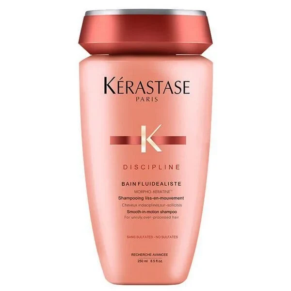
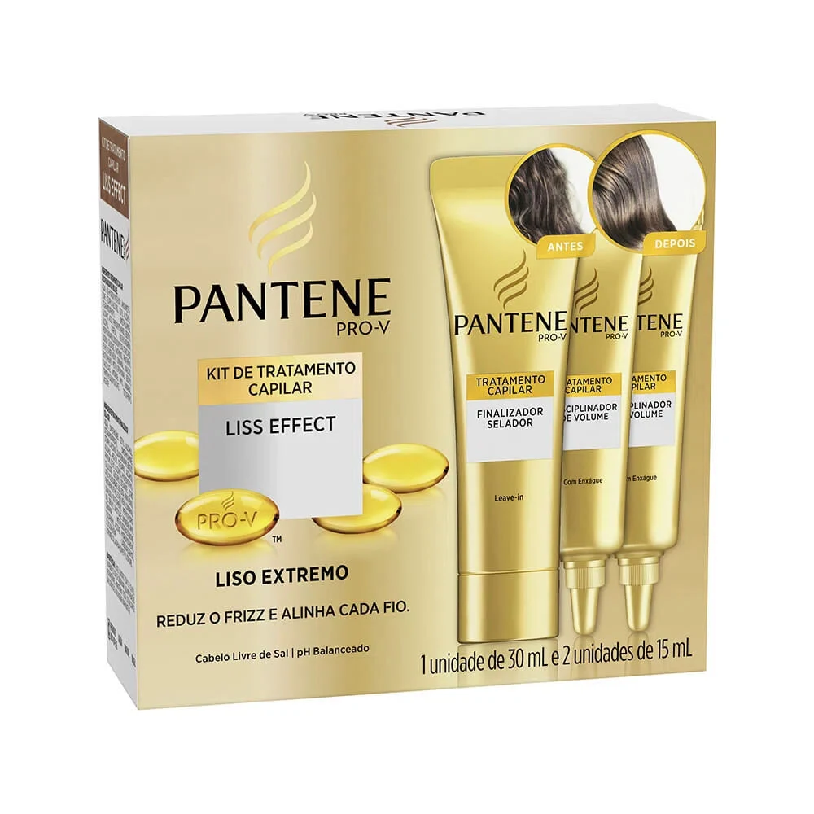
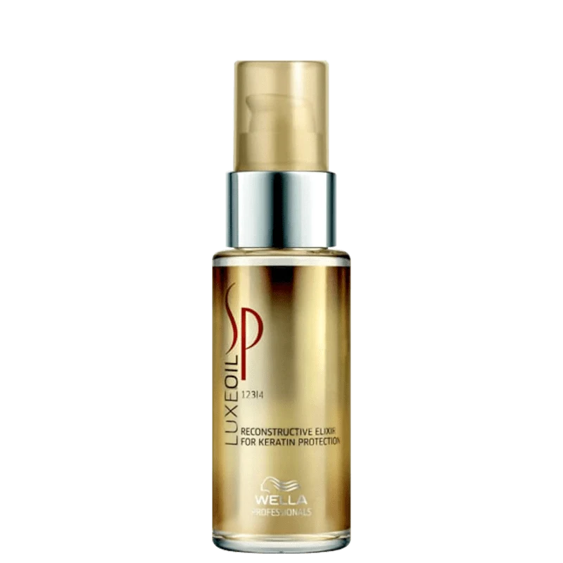
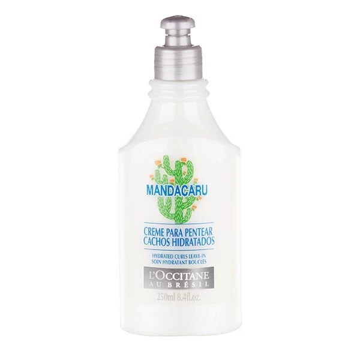
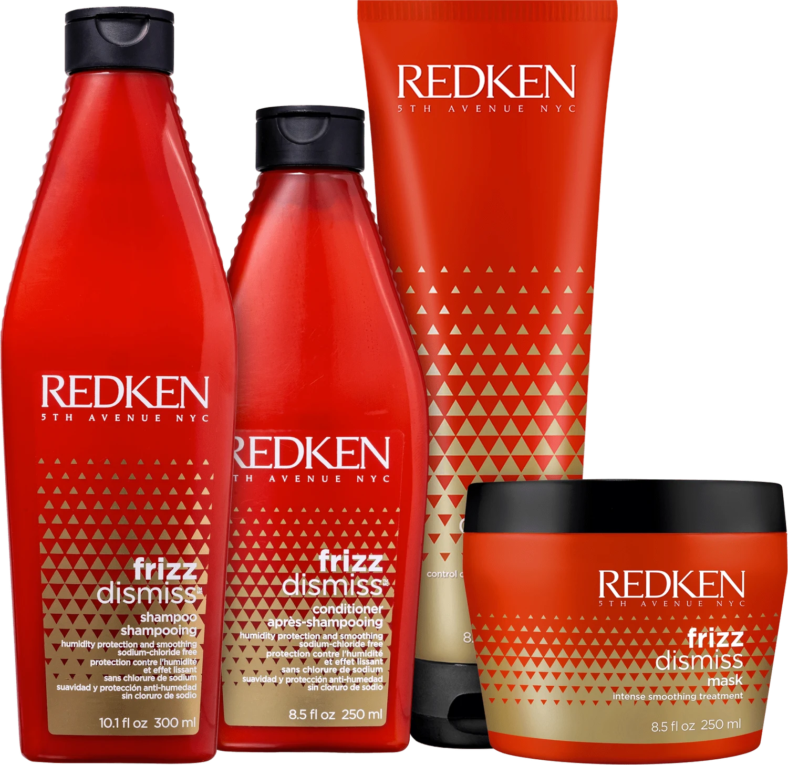
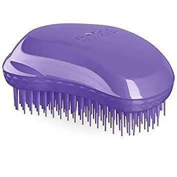

O cabelo com frizz é um problema enfrentado por muitas mulheres. Os fios rebeldes, como são popularmente conhecidos, podem realçar o volume e esconder o brilho. Talvez você não saiba, mas a umidade é uma grande inimiga dos cabelos.
Para combater esse desconforto capilar, precisamos conhecer um pouco mais sobre o nosso cabelo. Nessa matéria iremos conhecer a estrutura do cabelo e identificar o que pode estar causando o frizz. Além disso, apresentaremos 4 Dicas para eliminar o frizz no cabelo e indicação de produtos.
Antes de mais nada precisamos deixar bem claro que o frizz pode aparecer em qualquer tipo de cabelo, seja ele fino, liso, enrolado ou grosso. E que tem solução. Vamos lá!
Dermatologia - Conhecendo a estrutura do cabelo
O fio do cabelo é composto basicamente por três camadas: cutícula, córtex e medula.
Medula: porção mais central do fio.
Córtex: é a camada intermediária responsável pela estrutura e forma da haste capilar. A distribuição da queratina ao longo dos fios irá definir o aspecto externo (espessura e formato) e determinar se o cabelo será liso ou crespo.
Cutícula: É a parte mais externa do fio, constituída de células mortas achatadas, sobrepostas umas às outras como telhas de um telhado. Tem como função não permitir que substâncias nocivas penetrem no interior do fio e protege da perda excessiva de água. É responsável pelo brilho, maciez e proteção dos fios.
Quando essas camadas da haste capilar estão muito abertas, perdem a hidratação e nutrientes, deixando os fios opacos, secos, quebradiços e arrepiados, formando o frizz.
O que causa o frizz nos cabelos
As causas mais comuns do frizz são: químicas, umidade e ressecamento.
Os processos químicos, desde a tintura até o alisamento. Esses procedimentos retiram nutrientes essenciais da estrutura capilar, facilitando a entrada de umidade presente no ambiente e a aparição dos fios elétricos, além de deixar os fios mais porosos, com as cutículas dilatadas e quebradiças.
As condições climáticas também favorecem surgimento do frizz: unidade do ar , sol excessivo e o vento.
Ressecamento do fio, seja ele causado pelos danos externos diários, poluição, raios solares, ou uso excessivo de secadores , chapinhas e babyliss.
4 Dicas para eliminar o frizz no cabelo
1) Lave o cabelo em dias alternados:
Se você tem o costume de lavar os cabelos diariamente e ainda sim apresenta muito frizz, é interessante mudar a rotina de limpeza capilar. Lavar o cabelo em dias alternados, isso porque a higienização exagerada pode levar à desidratação.
Além disso, na hora do banho, prefira a temperatura da água morna ou fria, use o shampoo duas vezes e finalize a limpeza com condicionador. Importante enxaguar bem para não deixar resíduos nos fios e levar ao ressecamento.
2) Não esfregue a toalha no cabelo após o banho
É preciso ter cuidado e delicadeza ao tirar o excesso de água dos cabelos. Torcer os fios junto com a toalha só vai danificar ainda mais a haste capilar e aumentar o frizz.
A forma correta é enxugar os fios sem precisar torcê-los ou agredi-los, é apenas pressionando contra a toalha de forma suave.
3) Invista em máscaras de hidratação
O ressecamento dos fios é uma das principais causas de frizz, por isso a importância de usar máscara de hidratação capilar.
Invista em um produto com ativos como glicerina, pantenol, bepantol, extrato de Aloe e Vera, keratino-complex, ômega 3, 6 e 9 , e filtros UV - que protege a fibra capilar.
4 ) Utilize escovas que auxiliam na diminuição do frizz:
Em geral, são escovas com cerdas 100% naturais e com proteção nas pontas (bolinhas) que não machucam o couro cabeludo.
Com esses cuidados, seu cabelo ficará mais macio, brilhoso e sem frizz.
Produtos para combater o frizz no cabelo

Linha Bain Fluidealist da Kérastase

Liss Effect da Pantane

SP System Professional Luxe Oil - Óleo Capilar 30ml

Linha Mandacaru da L`Occtiane

Linha Frizz dismiss da Redken

Escova de cabelo Tangle Teezer
Visita ao dermatologista especialista em cabelos
Seguir com os cuidados diários com os cabelos pode ajudar a domar os fios rebeldes. Agende sua consulta com a Dra, Flavia Souza.
Cuide do seu cabelo aqui
Conheça a Dra. Flávia Souza
Dermatologista Dra. Flavia SouzaMédica especialista em Dermatologia pela Sociedade Brasileira de Dermatologia, com pós-graduação em Dermatologia e Medicina Estética pelo Instituto Pele Saudável/SP. É membro da Sociedade Brasileira de Dermatologia e da Sociedade Brasileira de Cirurgia Dermatológica, além do Grupo Brasileiro de Melanoma e do Colegio Ibero Latinoamericano de Dermatología (CILAD).